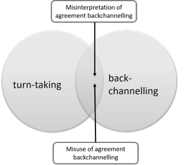

Backchannelling
This is variously spelled as back-channelling or back channelling. We will stick with the one-word compound.
Backchannelling should not be confused with turn taking, although
there are connections, as we shall see. Turn taking is to do
with what happens at the interface between moves in an interaction,
backchannelling is to do with what happens during
longer
moves.
There is a link at the end to the guide to turn taking or you can
click here to go there now
(new tab).
Backchannelling can be defined as listener responses to what is being said rather than the listener attempting to interrupt or take a turn. In this sense, it is part of what is essentially one-way communication because the person doing the backchannelling is not contributing anything new to the exchange. It can be verbal, paralinguistic or signalled by silence and eye contact. When backchannelling is verbal, it is normally phatic, i.e., requires no response and communicates little but ongoing interest.
Backchannelling is also not simply a response to an utterance as
in, for example:
I've passed my driving test.
That's great!
That is just an initiation and a conventional response (in this case
the preferred one).
Backchannelling differs in being the on-going reaction of the
listener during a speaker's longer turn.
In almost all cultures, it is important that both the speaker and
the listener are taking an active part in an interaction.
Listeners, in other words, need to be active.
We use the expression almost all cultures
deliberately.
There is evidence that within Anglophone cultures, and many
other cultures, especially in Europe, silence on
behalf of a participant in a conversation signals the need for
someone else to take a turn and is not tolerated for long.
In other cultures, such as those containing speakers of North
American Athabaskan or Dene speakers (which includes, e.g.,
Navajo) silence betokens no such thing and speakers of these
languages remain silent without this causing any feelings of
discomfort.
Encounters between English speakers and Athabaskan speakers may
result, as Trudgill (2000:132) has suggested in
Athabaskans ... thinking that
English speakers are rude, dominating, superior, smug and self
centred
and English speakers finding
Athabaskans rude,
superior, surly, taciturn and withdrawn
In what follows we are analysing what is properly known as
discourse makers, i.e., those signals that speakers use to manage
and mark phases in discourse. Discourse markers are also part
of turn taking language, of course.
The term discourse marker is now used so loosely in the profession,
to mean almost any language element that contributes to coherence or
cohesion that it has lost all utility as a technical term. We
shan't use it again here.
 |
Types of backchannelling |
- Non-verbal
- Backchannelling does not need to be spoken, it can be
achieved by smiles, eye contact, gesture and a number of other
paralinguistic features.
Eye contact is, in particular, variable across cultures and what is perceived by a person from one culture as a token of interest in what is being said may be deemed slightly aggressive in another culture. Anglophone cultures fall into the first category. On the other hand, in East Asian, South American and some African cultures, extended eye contact can be interpreted as a challenge or hostile act.
Cultures with large power distances also tend to be those in which extended eye contact with one's superiors is often culturally inappropriate.
In most cultures, head nodding is a sign of agreement while eyebrow raising is one of surprise or disbelief. That is not a universal truth because in some, an upward tilt of the head means No and in others it signals doubt or disagreement. - Verbal
- Most verbal backchannelling is phatic, insofar as it
communicates little but the listener's intention to maintain a
comfortable rapport with the speaker.
It takes various forms, for example:- Noises and interjections such as
Mm Mm
Uh Huh
Ah
Wow!
Cor!
Oh!
Urgh!
Mmmm
etc. which signal the listener's reaction to (and by implication comprehension of) what the speaker has said. - Single-word comments such as
My!
Goodness!
Awful!
Interesting
Yes
etc. which do carry a bit more meaning but are still phatic insofar as they perform no communicative function in terms of the transmission of information. Mostly these words signal the desire to maintain rapport. - Short phrases or clauses such as
And so?
What then?
How awful for you
How nice for you
That's good
Do go on
Tell me more
etc. which carry some information and are often routinised and produced as single language chunks (which is how they can be taught, of course).
- Noises and interjections such as
 |
Functions of backchannelling |
There is as yet no complete or generally agreed description of the functions of backchannelling but the following is based on some intuitively sensible functions that backchannelling signals realise. All these functions can be achieved verbally and non-verbally.
- Continuers: Please go on

Making prolonged eye contact while remaining silent is, in some cultures, an encouragement to continue talking. In others, as we saw, it is not and may be seen as aggressive.
Other ways of realising the function are with rising intonation, for example:
Mm Mm ↗
Uh Huh ↗
Yeah Yeah ↗
etc.
It has been noted that most continuers are multisyllabic (rather than the monosyllabic fillers which have no discourse function). For example, saying
Uh ↘
in the middle of a turn functions as a filler, therefore, but saying
Uh huh ↗
during someone else's turn is a backchannelling device.
Continuers are almost always spoken with a fall-rising tone or a simple rising tone. Uttering, for example,
Yeah ↘, yeah ↘
with a falling tone would be construed as showing a lack of interest or impatience.
The conventional pitch movements to teach are, therefore:

or 
- Comprehension signals: I understand

These sorts of backchannelling devices are almost always verbal because there is no universal gesture or facial expression which sends the message that the listener understands what has been said. They include:
Uh Huh →
Yes, I see →
OK →
Right →
Mm →
The difference is that these can be uttered with a flat or slightly falling tone as they do not signal encouragement, just that the listener has understood so far. For example, when being given directions, the listener may insert any one of these kinds of signals after each stage of the directions to signal that what has been said so far has been noted and the speaker may go on rather than recapitulating.
The pitch shows no movement (or a slight fall) and is, therefore:

or 
- Agreement signals: That's right

These devices may be non-verbal and include vigorous nodding and smiling alongside hand gestures such as thumbs-up sign, displaying both empty hands to imply I don't know either and so on. They can also be verbal and include, for example:
Yes, yes ↗
Right! ↗
I agree ↗
Spot on ↗
True. True ↗
Too true ↗
Dead right! ↗
etc.
Again, like continuers, they need usually to be uttered with a rising or fall-rising tone or miscomprehension will arise. Spoken with a falling or even a flat tone, for example,
Yes, ↘ yes ↘
can indicate impatience and frustration.
The pitch movement is, therefore:
or - Empathy signals: How awful for you!
These can be positive responses or those showing sympathy. They also vary in strength with some expressing quite high levels of emotional response and others being much weaker. For example, these are positive empathetic comments:
Great! ↗
Congratulations! ↗
Wow ↗
Yesss! ↗
Good for you ↗
Well done ↗
etc. and these can also include non-verbal signals such as fist pumping or handshaking.
Sympathy signals can also be made non-verbally with a sad face or downcast mouth shape but verbal signals include:
Oh, dear ↘
Oh, I'm sorry ↘
What a pity ↘
etc.
Non-verbally, this form of backchannelling can often be achieved by, e.g., tightly shutting one's eyes to show horror or great sympathy, raising eyebrows to show interest or surprise or slow, repeated head nodding to show empathy.
Verbally, the two types have different intonation contours so the positive ones will usually be spoken with a rising or fall-rise contour and the sympathetic responses with a falling intonation and, usually, lowering of voice volume.
The pitch movement is, therefore:
or or - Expansion request: Is that so?

These are not quite the same as interruption asking for more detail or clarification. They are simply minor prompts to the speaker that he / she should expand a little on what's just been said so they do not constitute turn-grabbing acts. They include:
Really? ↗
Is that so? ↗
And? ↗
etc.
A common form is that the listener repeats the last phrase uttered by the speaker but with a rising or questioning intonation contour such as:
to the hospital? ↗
Which signals the listener's wish for a little more information.
The pitch movement is, therefore, usually, simply:
 |
The grey area |
It bears repeating that backchannelling and turn-taking are not
at all the same thing.
There is, however, a slightly grey area
between them which concerns what happens when a speaker interprets a
back-channelling device as a request for a turn and concedes the
floor or when a listener converts or extends a backchannelling
signal into a new turn and overrides the speaker.
The first of these can happen in a dialogue such as:
A: And the road between here and my parents' house has
just got worse and worse
B: I know, I've driven it myself
A: Have you? When?
in which speaker A has misinterpreted B's comment to be a request
for a turn and so concedes the floor by asking the question. B's
comment may have been intended as an agreement signal only and B may
have expected A to continue the turn after it was uttered.
| A: | And the road between here and my parents' house has just got worse and worse |
| B: | Has it? |
| A: | Yeah. It's almost undriveable because of the roadworks and so on |
| B: | I know, I've driven it myself and you are right about it. I've written to the council twice and got no response so I'm going down to the Town Hall tomorrow to speak to the Chief Engineer and see what she has to say about it. We need to get something done. |
Thornbury (2005) and others include backchannelling as a part of
turn-taking skills and that is a defensible position. The
problem is that, as we have just seen, how the current speaker and
the backchanneller interpret what is said is open to a good deal of
doubt and dependent to a large extent on the listener's confidence
and intentions and the context. The current turn-holder's
confidence and intentions also play a role.
Most backchannelling does not mean that the hearer wishes to take a
turn, especially if they are softly spoken or non-linguistic.
For example:
Mm, mm
Uh, huh
Oh
I see
and so on spoken softly with a level or slightly rising tone, simply mean that the
hearer is alert to what is being said.
However, utterances such as:
Well!
Oh!
Dear me!
etc. are variously interpretable and unpredictable. They may
be encouragement to continue the turn or they may be signalling a
wish to take a turn. They may, too, be misinterpreted and
misused.
The guide to turn-taking is linked in the list of related guides at the end.
Imagine it like this:

In these cases, it may be very difficult to infer speakers' intentions just by listening to them but it does not help our students if we teach backchannelling and turn-taking skills as if they were the same. They are not, and they require different approaches.
 |
Teaching backchannelling skills |
There are poor ways to do this:
- To ignore the area and assume that the skill will be absorbed or transferred from the learners' first
languages(s) or that the learners can construct appropriate
backchannelling expressions spontaneously while they are also
trying to decode what they are hearing.
An associated issue is that backchannelling is often a culturally determined phenomenon and learners from cultures which consider silent listening a sign of politeness and respect may be reluctant to say anything. If that happens when they are interacting with people whose cultural rules expect a good deal of backchannelling, the speakers may become disorientated, uncomfortable and confused, often to the point at which they simply stop talking altogether because they are not getting any feedback or encouragement.
This is even more the case when no visual signals are available as on the telephone. If, when someone is taking a reasonably long turn in a telephone conversation, the listener is completely silent, it is not usually a matter of more than 10 seconds before the speaker self-interrupts with:
Are you still there?
or something similar. - To conflate backchannelling and turn-taking skills. If you do this, learners may confuse any form of backchannelling with a request to take a turn and confuse listeners by conceding the floor unnecessarily. Alternatively, they may assume that all interruptions are simply backchannelling and refuse to recognise a legitimate request for a turn.
- To teach the language without teaching the purposes for
which the language is used. This generally decays into a
kind of phrase-book approach in which learners are given
dubiously useful sets of language exponents but are not able to use
them appropriately because the setting and purposes have not been made clear.
- While it is useful to have a set of language chunks at
one's disposal, some are not used for
backchannelling per se but to introduce a speaker's
turn, re-start a turn or interrupt in order to take a turn
(although that is rare).
Using backchannelling devices inappropriately as turn-grabbers may often be considered rude. Knowing how to use them appropriately, on the other hand, is a real aid to fluency because they are prefabricated and do not need to be constructed from scratch. - Sets of exponents might include, for example:
- Uh Huh ↗ (= please go on)
- I see → (= I understand so far)
- Right ↗ (= I agree)
- Rotten luck ↘ (= I sympathise)
- So? ↗ (= I am asking for some expansion)
- While it is useful to have a set of language chunks at
one's disposal, some are not used for
backchannelling per se but to introduce a speaker's
turn, re-start a turn or interrupt in order to take a turn
(although that is rare).
 |
Awareness raising |
Many learners (and not a few teachers) are unaware how and to
what extent cultures differ in this area. Before we can begin
to teach it, learners need to be convinced that there is
something worth learning.
A little cross-cultural awareness-raising is called for.
In mono-cultural settings with all the learners from the same
culture, especially if the teacher shares awareness of the culture's
norms, this is comparatively straightforward because we only need to
tackle the differences between two cultures.
In more diverse settings, the situation is more complex, albeit more
interesting as well.
Guessing games are a way of doing this. For example, a simple
questionnaire to discuss in pairs or small groups (putting learners
who share cultures into the same groups) can work well. Like
this:
| In your culture, what do you do when you are listening to a friend's story? | Yes | No | Sometimes |
| Keep silent and look them in the eye | |||
| Say things like OK, I see, What happened next? | |||
| Keep silent and look away | |||
| Say, Um, Ah, Hmm etc. | |||
| Nod or shake your head | |||
| Smile or look sad (depending on the speaker's feeling) | |||
| In your culture, what do you do when you are listening to your boss or your teacher giving you instructions? | |||
| Keep silent and look them in the eye | |||
| Say things like OK, I see, And next? | |||
| Keep silent and look down | |||
| Say, Um, Ah, Yes etc. | |||
| Nod or shake your head | |||
| Look interested |
How you approach this and what the settings are will vary, of
course. One way is to get people to fill in the grid
individually and then get them to explain their choices to a friend.
Alternatively, you can discuss the outcomes as a whole class,
focusing especially on what prompts a 'sometimes' answer. For
example, it may be expected in an Anglophone culture to use
backchannelling expressions very frequently, others may see it as
disrespectful especially if there is a power difference as in the
second half of the little exercise above.
The next step is to run the same exercise but focus on what is
acceptable in an Anglophone environment such as Britain, Australia
or the USA.
The answers may well surprise people.
 |
Combining the functions |
Backchannelling has, as we saw above a number of distinct
functions. However, they are connected and often used together
while listening to someone else's long turn so three or even all of
the types can be practised together but only providing the
learners know what they are doing and can get the intonation right.
It helps, therefore, to introduce and practise the forms discretely
before asking learners to combine them.
Because the skill is by no means easy to master and, unlike turn
taking, is essentially not about the reversal of roles between
speaker and listener, you can do the speaking and the learners can
do the backchannelling. That way, they only have one thing to
think about and pressure is reduced.
A good place to start is with your telling an anecdote or story and
getting each learner in turn to focus on what you are saying.
Like this:
- First telling of the story:
Each learner must produce a continuer, such as
Go on
Tell me more
etc. - Second telling:
Each learner must produce an expression of interest, such as
I see
Uh Huh
etc. - Third telling:
Each learner must produce an expression of emotional reaction, such as
Oh dear
Wow!
Yuck!
etc.
And so on until all the five different types have been mastered and
the intonation contours the learners are producing are satisfactory.
The next stage is to give each learner a different type (or two) of
backchannelling devices to achieve so some are expressing interest, some
understanding, some sympathy and so on.
You may, in fact, need to have a range of short stories and
anecdotes to use so that you can evince content-appropriate
responses.
The ambition, of course, has to be for you to step aside and for
the learners to take over both the role of speaker and
backchanneller.
However, they can only focus on one role at a time, because this is
not about turn taking, so the learners need to swap roles frequently
to even out the practice opportunities.
 |
Forcing the issue |
Verbalised backchannelling is a salient feature of audio-only,
telephone conversations. The lack of the availability of any
gesture or facial expressions to signal interest and so on has to be
made up for by the continual use of backchannelling expressions.
Staying silent when someone is taking a long turn in a telephone
conversation is not an option because even short silences will
evince something like:
Hello? Are you still there?
etc.
These sorts of interactions are, therefore ideal practice vehicles
in this area because they force the use of backchannelling
expressions (in all cultures).
Ideally, you can send people out of the room to telephone classmates
and take a long turn while the listener deploys as many
backchannelling devices as they can. Then, the listener can
call back or take over the turn and the roles are reversed.
If this is not an available option, simply placing learners on
back-to-back chairs can simulate the effect. Topics,
naturally, need to be easy and familiar (because we are not focusing
on taking the long turn) and might include:
- giving directions to a place known to one but not the other (which requires extensive use of comprehension and continuer expressions)
- telling someone about an enjoyable day (which requires use of empathy signals)
- telling someone about an awful day (which requires use of a different kind of empathy signals)
- suggesting doing something enjoyable together (which
requires the use of agreement signals)
and so on.
 |
Paralinguistic features |
These need first to be demonstrated. TV interviews are a good source
because the interviewers will often pre-record their responses of
showing interest and encouragement to go on, by nodding and
appearing interested with direct eye contact which are then spliced
into the interview before it is broadcast. That way, only one
camera is required.
Again, focus is important so that the cultural appropriacy of each
feature and how it is performed can be learnt. You need to
focus on, e.g.:
- nodding
- eye contact
- smiling
- looking sad
- eyebrow raising
- eye closing
- hand movements
etc.
Practising these can be fun and getting learners to act out short
interactions containing three of them at least can be
productive, engaging and raise cultural awareness of the importance
of backchannelling gestures.
 |
Eye contact and eye movements |
We have already noted that the signal sent by the maintenance of eye contact is culturally determined to a large extent but we need to elaborate here just a little. Here are some points to bear in mind:
- In western and especially Anglophone cultures eye contact in non-conflictual interactions is usually a signal of maintained interest. However, in any conflictual situation, such as a disagreement, it may be considered as aggressive and hostile.
- In many other cultures, any extended eye contact may signal discourtesy or impertinence especially between people of varying social power.
- Breaking eye contact does not necessarily mean a loss of interest. If you ask someone a difficult question which requires them to think hard, the usual reaction is to break eye contact immediately. Equally, if speakers are trying to find the correct words to explain something or recall a complicated series of events, they, too, may break eye contact while they think. It is not a signal of giving up a turn; it is a signal of thinking hard.
- Whatever proponents of Neuro Linguistic Programming may say, there is no truth in the assertion that different types of eye movements betray different sorts of cognitive processes.
| Related guides | |
| speaking | where you will find more on some of aspects of analysing and teaching the skill |
| context | what it is, where it comes from and face-threatening acts |
| discourse | the in-service index to more guides in this general area |
| turn-taking | to see where the differences lie in related areas of analysis |
| learning style and culture | for more on cultural aspects of language use and links to articles about culture |
| sociolinguistics | for a guide to the areas of major concern in the study of how social factors such as ethnicity, class and register affect how languages are used |
| articles | the link to the articles index where you will find two articles on cross-cultural issues |
References:
Cutrone, P, 2010, The Backchannel
Norms of Native English Speakers: A Target for Japanese L2 English
Learners, Reading: University of Reading Language Studies
Working Papers, Vol. 2 pp 28-37
Schegloff, EA, 1981, Discourse as an interactional achievement:
Some uses of 'uh huh' and other things that come between sentences,
in Georgetown University Round Table on Languages and Linguistics
1981. Edited by Deborah Tannen. Washington, D.C.: Georgetown
University Press
Thornbury, S, 2005, How to teach Speaking, Harlow: Longman
Trudgill, P, 2000, Sociolinguistics: An Introduction to Language
and Society, London: Penguin Books